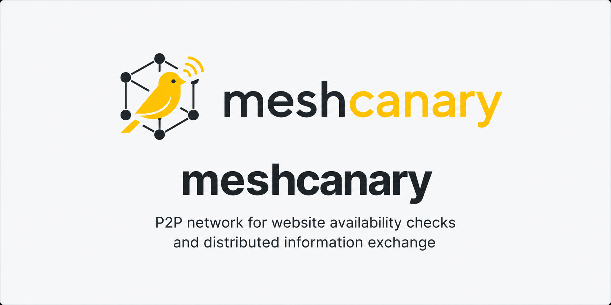

Mesh Canary — это сеть независимых узлов, запущенных добровольцами. Каждый узел самостоятельно проверяет доступность сайтов, подписывает результаты своим ключом и передаёт их соседним узлам. Центрального сервера с данными нет — а значит, нет и единой точки, которую можно заблокировать, взломать, изъять или заставить замолчать.
Каждый узел выполняет DNS-разрешение, устанавливает TCP-соединение и завершает TLS-рукопожатие с проверяемым ресурсом — то есть проверяет те уровни соединения, на которых чаще всего возникает блокировка или сетевой сбой.
Результат подписывается собственным ключом Ed25519 узла. Идентификатор узла — это его открытый ключ: без центрального реестра, учётной записи и механизма, через который эту идентичность можно отозвать.
Подписанные результаты и адреса известных узлов передаются от соседа к соседу, пока сеть постепенно не приходит к общей картине доступности ресурсов.
Один IP-адрес, который можно заблокировать. Один оператор, на которого можно воздействовать. Одна база данных, которую можно изъять. И один сбой, после которого перестаёт работать вся система.
Каждый результат подписан независимо и может быть проверен независимо. Исчезновение одного узла — или даже сотни узлов — не отменяет того, что остальные участники сети уже получили и проверили.
Всего несколько команд создадут виртуальное окружение, установят необходимую зависимость и подготовят скрипт запуска узла.
git clone https://github.com/dannnn6/meshcanary.git
cd meshcanary
./install.sh
./run-node.sh
Панель управления будет доступна по адресу
http://localhost:8080.
Полная инструкция, включая подключение к другим узлам сети,
находится в
README.